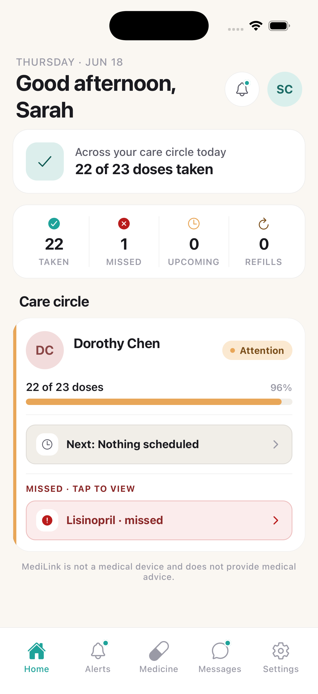

Everyone stays in the loop.
Caregivers see dose history in real time. Patients stay independent. The whole family gets the picture without anyone having to ask.
MediLink connects patients and caregivers so everyone stays informed — without anyone having to hover.
No complicated setup. No medical forms. Just download and go.
Free on the App Store. Takes about 30 seconds.
Add your medications and set your reminder times. Takes about two minutes.
Send an invite to a family member. They join free and can see your doses right away.
Because worrying about whether a dose was taken is no way to spend an afternoon.
Caregivers see dose history in real time. Patients stay independent. The whole family gets the picture without anyone having to ask.
Doses are self-reported with a single tap. Miss patterns trigger gentle alerts before small gaps become bigger problems.
From seniors who want one tap to caregivers managing multiple patients — MediLink meets everyone where they are.
Four simple steps. A patient taps what happened — MediLink keeps the whole family in the picture.
Add your medications and reminder times in about two minutes. No medical forms, no complicated onboarding.
Each day, tap "I took these" or "I skipped these." That's it. MediLink records what you self-report — nothing more.
Connected family members see dose history in real time. If a pattern looks unusual, they get a gentle heads-up — no hovering required.
Send voice notes, text messages, and refill requests — all inside the app. Care feels like family, not a system.

See every patient's dose history in real time. Get a heads-up when something looks unusual — like a missed morning dose that's out of character. Manage refills and stay connected through voice and text notes, all in one place.
Built for patients who want simplicity and caregivers who want peace of mind.
All features are self-reported and informational. MediLink does not provide medical advice.
Real stories from patients and caregivers.
My mom is 78 and was always forgetting her evening pills. Now I get a quiet heads-up if something seems off. I don't have to call her every night to check anymore.
Sarah K.
Daughter and caregiver
I manage four medications and my son lives two states away. This app gives him peace of mind without making me feel like I'm being watched.
Robert M.
Patient, age 71
Setting it up for my dad took maybe five minutes. The simple screen he sees has one job and he actually uses it every day. That's all I needed.
James L.
Son and caregiver
Testimonials are illustrative examples of how families use MediLink.
No credit card needed
or $39.99/year · save 33%
Caregivers are always free.
Start your 14-day free trialNo. MediLink is not a medical device and does not provide medical advice. Everything in the app is informational only — it records what you self-report, like when you marked a dose as taken or skipped. It never tells you what to take, when to take it, or what to do if you miss a dose. For any medical questions, please speak with your healthcare provider.
Yes, completely free. Caregivers never pay anything to use MediLink. You can connect to a patient's account, receive alerts, send messages, and manage refills on their behalf — all at no cost. Only the patient needs a MediLink Family subscription to unlock caregiver connectivity.
When two or more doses are marked as skipped or go unlogged, connected caregivers receive an urgent notification right away. This is designed to give family members a heads-up when something seems out of the ordinary — not as a clinical alert, but as a gentle signal that someone they care about may need a check-in.
When you start a MediLink Family subscription, you get 14 days free with full access to every feature — caregiver connectivity, unlimited medications, drug interaction flags, voice and text messaging, and predictive refill reminders. You will not be charged until the trial ends. You can cancel anytime before then and you will not owe anything.
Yes. MediLink stores your data securely and does not sell it to third parties. The app records only what you choose to self-report — dose logs, messages, and medication names you enter. We do not access your medical records, prescriptions, or any external health data. For full details, see our Privacy Policy.
Care runs in the family.